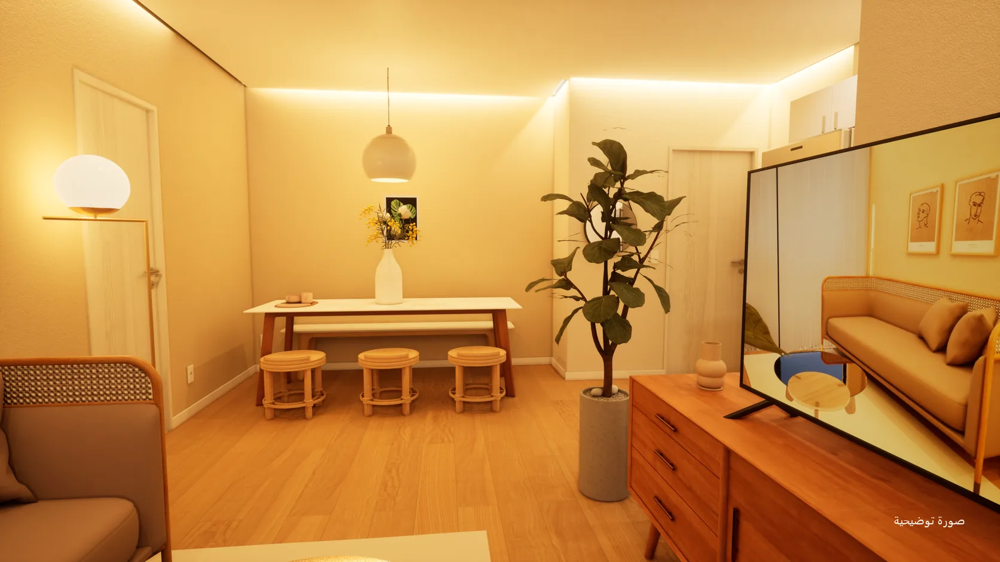
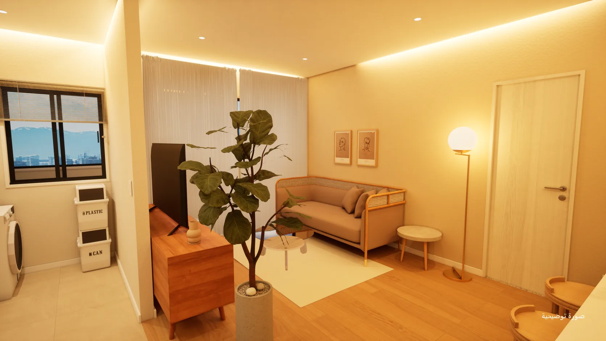
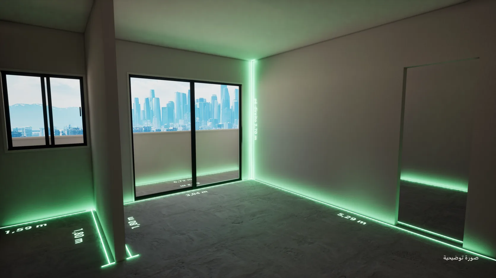
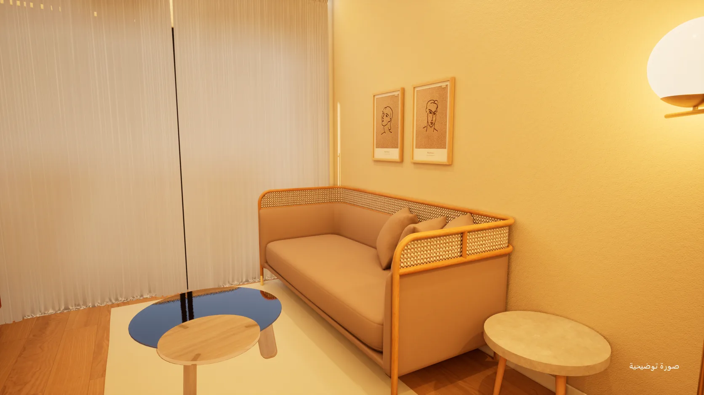

استكشاف
عرض الغرف واستكشاف المخطط وتوضيح خيارات التهيئة المخطط لها في المشروع.
للمطوّرين العقاريين وشركات البناء
حوّل المخططات إلى تجارب تساعد المشتري على فهم مشروعك واستكشافه وتخيّل الحياة فيه.
تجربة افتراضية مع إدارة للمشروع
ومتابعة في كل مرحلة.

شاهده يعمل
لقطات مسجّلة بنظارة الواقع الافتراضي في الوقت الفعلي، مع صور مُعدّة للشقة نفسها: الأنماط والتشطيبات والنهار والليل والمخطط المفروش.
61 ثانية · دون صوت · صور توضيحية
01 / حل متكامل
يجمع DecoradoVirtual بين العرض التفاعلي للعقار والتنظيم اللازم لإنتاج هذه التجربة ومراجعتها والمحافظة عليها.
يتابع المطوّر المشروع، ويحصل فريق المبيعات على طريقة أوضح لعرضه، ويستكشف المشتري الغرف ويتصوّر الإمكانات قبل اكتمال البناء.
عرض الغرف واستكشاف المخطط وتوضيح خيارات التهيئة المخطط لها في المشروع.
تنظيم المراحل والمسؤولين والطلبات، مع سجلّ للإصدارات والموافقات.
مرافقة في إعداد الموجز وفي المراجعات وفي تجهيز التجربة للاستخدام التجاري.


هيكل خاممفروش02 / وضوح أكبر في القرار
يُظهر المخطط توزيع المساحات، بينما تساعد التجربة الافتراضية على فهم العلاقة بينها وتخيّل أساليب مختلفة للعيش.
استخدم التجربة دعوةً للتعرّف على المشروع وتعميق الاهتمام بمخطط أو غرفة أو خيار للتصميم الداخلي.
الوصول عن بُعد عبر المتصفح ضمن النطاق المخطط، ويخضع للتحقق التقني وللسعة المتعاقد عليها.
03 / غيّر في الحال
في النظارة أو على الكمبيوتر، يظهر كل اختيار في الحال داخل المكان نفسه. وتُحدَّد خيارات كل مشروع في الموجز.

23 ثانية · دون صوت · صور توضيحية
04 / المرافق المشتركة
الردهة والنادي الرياضي والمسبح جزء من التجربة أيضًا، نهارًا وليلًا، في النظارة وبالحجم الحقيقي. وفي الشاشة الرئيسية، يجمع كل مشروع مخططاته ومرافقه المشتركة.
05 / إدارة بشفافية
لكل طلب سياقه، ولكل مراجعة سجلّها، والنسخة التي تُعرض على المشتري تمرّ بموافقة محددة.
الموجز والمهام والجدول الزمني منظّمة لتوضيح سير الإنتاج وما يعتمد على كل طرف.
طلبات وتعليقات مرتبطة بالمشروع، مع إصدارات محددة تدعم المراجعة وتمنع أي لبس حول المواد المعتمدة.
متابعة لمواءمة المواد ومعالجة التعديلات وتجهيز الفريق لعرض التجربة وفق النطاق المتعاقد عليه.
يلتزم التمثيل المرئي بالمعلومات المعتمدة للمشروع، وتُعرض بدائل التصميم الداخلي بوصفها إمكانات، دون تغيير المواصفات الرسمية للعقار.
06 / من الموجز إلى العرض
الهدف التجاري والمخططات والمواد وجمهور المشروع.
الغرف والتشطيبات والتفاعلات وفق النطاق المتفق عليه.
التعليقات والتعديلات واعتماد نسخة العرض.
التجهيز للاستخدام التجاري، مع الدعم وشروط وصول محددة.
07 / إطلاقك القادم
تتيح لك المرحلة التجريبية تقييم التجربة مع فريق المبيعات، وتحسين خدمة العملاء، وتحديد أفضل طريقة للتشغيل.
01 اختيار مخطط والغرف ذات الأولوية.
02 تحديد الإعدادات وسيناريو العرض.
03 الاتفاق على المراجعات والدعم وشروط الوصول.
04 تقييم الوضوح للمشتري والفائدة للوسيط العقاري.
أسئلة شائعة
يجمع العرض بين إنتاج التجربة الافتراضية وإدارة المراحل والمتابعة. وتُحدَّد الغرف والتفاعلات والمراجعات والدعم لكل مشروع.
الخدمة عن بُعد جزء من العرض. والوصول التفاعلي عبر المتصفح مخطط له، ويعتمد على التحقق التقني في المرحلة التجريبية وعلى ظروف الاتصال والسعة المتعاقد عليها.
تُحدَّد خيارات المواد والتصميم الداخلي والإعدادات في الموجز وتُنفَّذ وفق النطاق، وتبقى البدائل المرئية منفصلة عن المواصفات الرسمية للعقار.
اتفقوا على المعايير مع فريقكم: سهولة العرض، وفهم المخطط، وأسئلة المشترين، واستمرارية المتابعة. أما أهداف التحويل فتُقاس في السياق الفعلي للمطوّر.
نعم. التجربة نفسها تعمل في الوقت الفعلي على الكمبيوتر وعلى نظارة الواقع الافتراضي المتصلة به، ولا تحتاج إلى الإنترنت أثناء العرض.
تواصل معنا
تحدّث مع الفريق عبر واتساب أو البريد الإلكتروني، أو تابع DecoradoVirtual على وسائل التواصل. نتحدث الإنجليزية والبرتغالية.